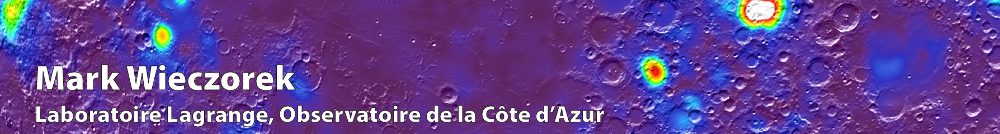

| HOME | CURRICULUM VITAE | PUBLICATIONS | RESEARCH |
 Click here for the long version of my CV
Click here for the long version of my CV
Contact Information |
|
|
Laboratoire Lagrange (UMR 7293) Observatoire de la Côte d'Azur B.P. 4229 06304 Nice Cedex 4, France |
Email: mark.wieczorek@oca.eu Web: www-n.oca.eu/~mwieczor |
Professional Positions |
|
| 2012–2016 | IPGP Planetary and Space Sciences, group leader. |
| 2010– | Centre National de la Recherche Scientifique, Directeur de Recherche. |
| 2002–2010 | Centre National de la Recherche Scientifique, Chargé de Recherche. |
| 1999–2002 | Massachusetts Institute of Technology, Cambridge, Postdoctoral Fellow. |
Education |
|
| 2008 | Université Paris VII, Habilitation à Diriger des Recherches. |
| 1994–1999 | Washington University, St. Louis, Missouri, Ph.D. Planetary Geophysics (Roger Phillips, advisor). |
| 1990–1994 | State University of New York at Buffalo, B.Sc. Physics, Geology Minor. |
| 1988–1990 | Rochester Institute of Technology, Rochester, New York, Physics. |
Professional Activities |
|
| 2011–2015 | Journal of Geophysical Research Planets, editor in chief. |
| 2013–2016 | ROBEX, Robotic Exploration of Extreme Environments (Helmholtz Alliance), advisory board. |
| 2009–2011 | International Lunar Network site selection working group, co-chair. |
| 2009–2015 | Group de travail système solaire (CNES), member. |
| 1997–1998 | ANSMET (Antarctic Search for Meteorites), field party member. |
Planetary Missions |
|
| 2013– | JUpiter Icy moons Explorer (JUICE). Ganymede Laser Altimter (GALA), Co-investigator. |
| 2013– | JUpiter Icy moons Explorer (JUICE). Gravity & Geophysics of Jupiter and Galilean Moons (3GM), associate. |
| 2012– | InSight; Mars geophysical station, Co-investigator. |
| 2007–2016 | Gravity Recovery and Interior Laboratory (GRAIL), Co-investigator. |
| 2006–2010 | Chandrayaan-1 X-ray Spectrometer (C1XS), Co-investigator. |
| 2005– | BepiColumbo Laser Altimeter (BELA), Co-investigator. |
| 2004–2007 | SMART-1 Demonstration Compact X-ray Spectrometer (D-CIXS), Co-investigator. |
Academic Advising |
|
Post-docs
Joana Oliveira (2015-),
Katarina Miljković (2012-2014),
Wenzhe Fa (2009-2011),
Hajime Hikida (2004-2006).
Ph.D.s
Shenxia Gong (2014-2016),
Clément Thorey (2012–2015),
Corrina Roy (2011-2014),
Qian Huang (2009-2011),
Matthieu Laneuville (2010-2013),
Mathieu LeFeuvre (2008-2010),
Virginie Beleguic (2003-2005).
Master-2
Adrien Broquet (2016),
Leila Gabasova (2016),
Sébastien Labarre (2014),
Simon Gernez (2012),
Baptiste Mary (2011),
Mathieu LeFeuvre (2007).
Master-1
Romain Contant (2014),
Joachim Audouard (2010),
Matthieu Laneuville (2009),
Julie Cosmidis (2008).
> Home
| Laboratoire Lagrange | Observatoire de la Côte d'Azur | L’Université de Nice-Sophia Antipolis |